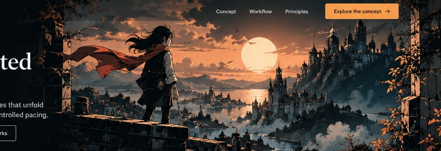

01
Compose
Organise illustrations, environments, characters and dialogue into a scene.
An authoring environment for visual stories that unfold through movement, rhythm and reader-controlled pacing.

Creating interactive visual stories can mean translating creative intentions into technical timelines, parameters and triggers.
Scrol-a-Vision is a proposed approach built around the way storytellers work — organising stories into chapters, scenes, shots and beats.
A visual workflow for storytellers, illustrators, animators and musicians: compose your world, direct the experience and prepare it for the web.
Organise illustrations, environments, characters and dialogue into a scene.
Arrange shots, camera movements, visual beats and audio cues along a scroll timeline.
The long-term goal: deliver a responsive interactive story that runs in a browser.
Organise work from the big picture to the finest detail. Scroll position becomes the story's playback position.
Scenes and shots are the primary organising concepts.
Readers move through the story at their own speed.
Storytellers, artists, animators and developers share a common structure.
A long-term goal is to separate story data from the editor and browser runtime.